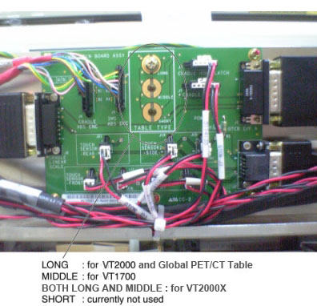

(For VT2000X Table) Install the new GTCN Assy into place, and tighten the 7 screws. Two of the screws are used for identification of VT2000X Table at both Long and Middle location.
Illustration 1: GTCN Assy

| NOTE: | Screws must tightened at both Long and Middle location for VT2000X Table. |